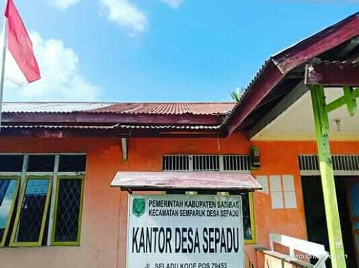
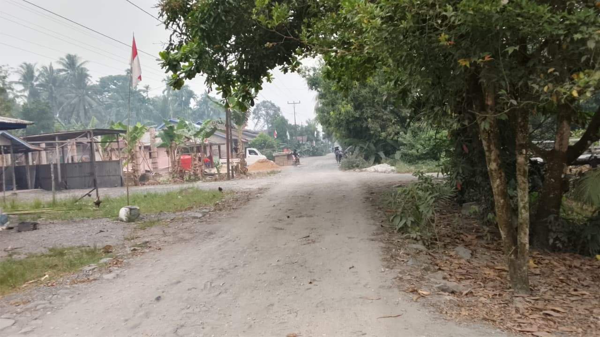
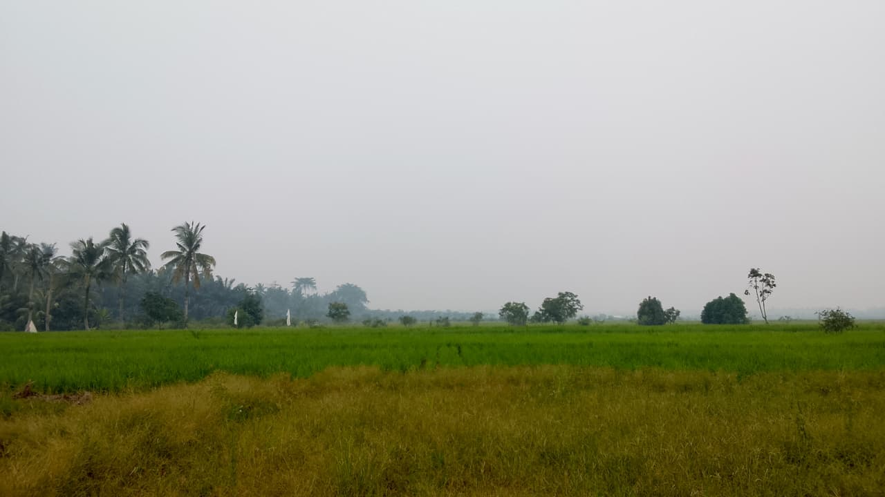
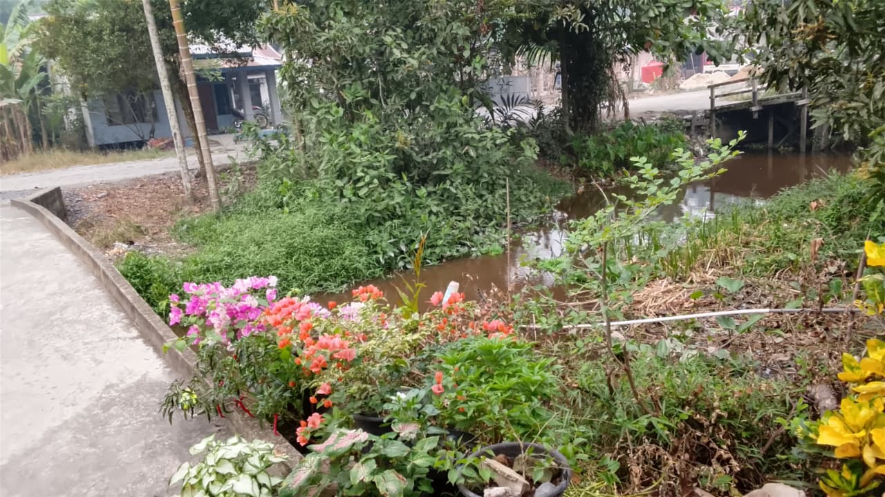

INFORMASI DESA
Profil Desa
Mengenal lebih dekat Desa SepaduSEJARAH DESA
Asal Usul Desa Sepadu

Sejarah dan Asal Usul
Desa Sepadu merupakan salah satu desa yang berada di Kecamatan Semparuk, Kabupaten Sambas, Kalimantan Barat.
Desa Sepadu berkembang melalui kehidupan masyarakat yang menjunjung tinggi kebersamaan, gotong royong dan kepedulian terhadap lingkungan.
Sejarah lengkap mengenai asal-usul desa dapat disesuaikan dengan data dan sumber resmi Pemerintah Desa Sepadu.
IDENTITAS DESA
Informasi Umum
Desa Sepadu
Semparuk
Sambas
Kalimantan Barat
PEMBANGUNAN DESA
Visi dan Misi
Visi
Mewujudkan Desa Sepadu yang maju, mandiri, aman, nyaman dan sejahtera dengan semangat kebersamaan.
Misi
- Meningkatkan pelayanan kepada masyarakat.
- Meningkatkan pembangunan desa.
- Menjaga kebersihan dan lingkungan desa.
- Meningkatkan semangat gotong royong.
- Mendukung kegiatan masyarakat desa.
LINGKUNGAN DESA
Gambaran Desa Sepadu


